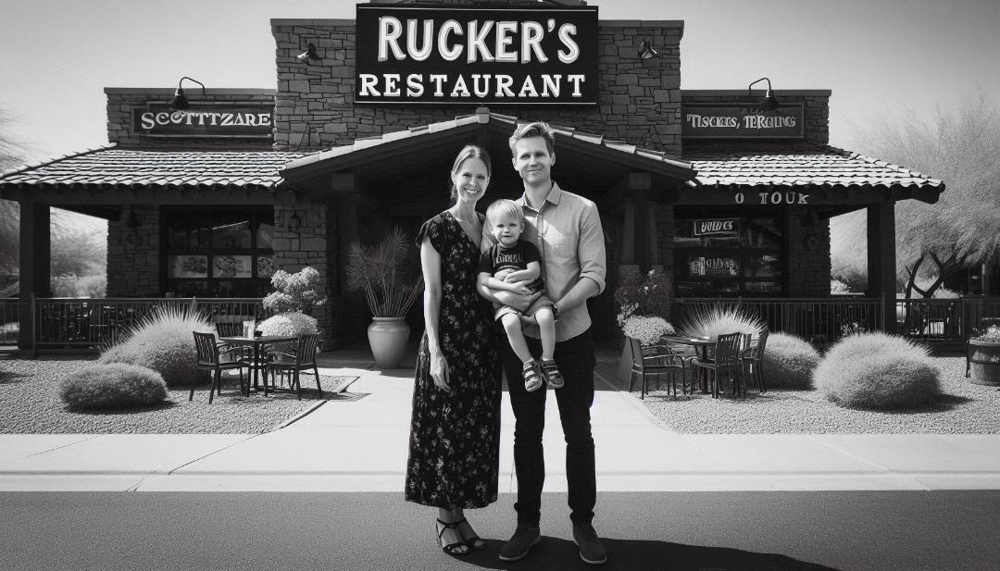

About Us
Ruckers Restaurant's Focus On Being:
- Family Friendly
- A Calm Envirment
- Proffesional
Rucker's Backstory
Ruckers Restaurant was founded in 1975 by Johnathan and Julie Rucker.
Johnathan had grown up cooking in the kitchen with his mother. When he finished school
he decided he was going to save up money to buy his own restaurant. He worked
tirelessly everyday at other restaurants as a cook. He was earning money and
was learning about how to run a restaurant. One day while working he met Julie Harper.
Years later they got married. They kept saving hoping to have enough one day to buy
there own restaurant. In all the restaurants they worked at they noticed that the enviroment
wasnt always calm, quiet, and family friendly.
On the sunny spring day of
April 23, 1975 they earned enough to buy there own restaurant! One month later
they bought a restaurant soon to be Ruckers. Unlike the restaurants they worked at they
resolved to keep there restaurant always calm, and family friendly with a professional waitstaff.
On August 1, 1975 Ruckers was established. Months later they had Jeff Rucker.
Today almost 50 years later Rucker's is still going and is under the third-generation ownership
of Johnathan and Julie Ruckers grandson John Rucker.

"Johnathan and Julie Rucker with baby Jeff infront of Rucker's Restaurant."